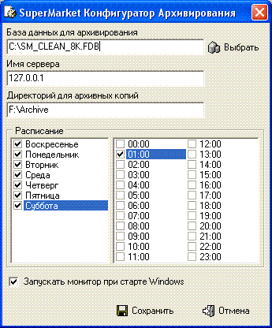
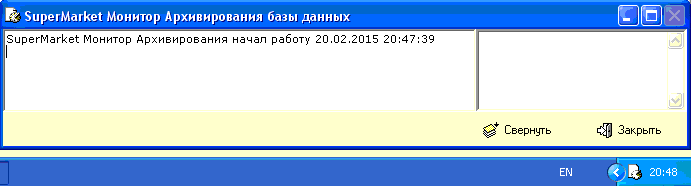

- Для дополнительной отказоустойчивости, в
дополнение к использованию теневой (shadow) копии базы данных, или если
таковая невозможна, например, база данных находится на ноутбуке, где только
один жесткий диск, можно использовать резидентную программу архивирования базы
данных FireBackup. Данное программное обеспечение состоит из двух частей:
собственно самой программы FireBackup.exe и утилиты ее настройки
Configurator.exe
- После установки программы эти приложения
находятся в каталоге C:\SuperMarket\FireBackup
- 1. Приложение Configurator.
Служит для задания времени для проведения архивирования базы данных. Так как
архивирование должно проводиться при отключенных от базы данных
пользователях, то обычно выставляется ночное время, но с достаточным временным
запасом для больших баз данных.
- Пример на рисунке ниже (в имени сервера можно
указать IP-адрес сервера или его имя).
- 
 Периодически
проверяйте наличие свободного места на выбранном диске.
Периодически
проверяйте наличие свободного места на выбранном диске.- 2. Приложение FireBackup. Обычно
запускается резидентно при старте Windows, что устанавливается в утилите
Configurator. В указанное время производит архивирование в заданный
каталог.
- 